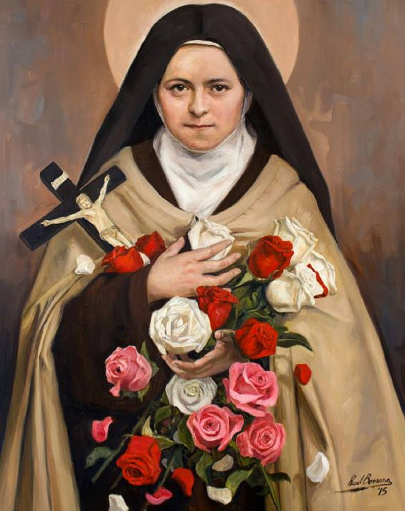

“Me preguntas por un método para alcanzar la perfección. Yo conozco el amor y solo el amor.”

— Santa Teresita del Niño Jesús
Inicio
Sobre EPCA…
Canales católicos
Noticias
Temas de Fe
Catecismo
El Rosario
Para niños
Páginas Católicas Recomendadas
PAPA LEÓN XIV